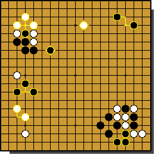

| Εκμάθηση | Downloads | Επικοινωνία | ||
| Κεντρική | Ιστορία | Applet | Παραπομπές | |
|  |
| Βάλτε το ποντίκι πάνω σε μια φωτισμένη περιοχή (όπου υπάρχει κίτρινο περίγραμμα) για να δείτε το περιεχόμενο του εκάστοτε link. |
|
Το Go στην Αρχαία Κίνα
Ο θρύλος των σοφών βασιλέων και οι χρησμοί
Οι περισσότερες αναφορές κινέζικων κειμένων στο Go αναφέρουν το εξής: « Ο Yao εφηύρε το Go ώστε να μπορέσει να καθοδηγήσει τον γιο του Dan Zhu ». Επειδή ο Yao αποτελεί έναν ημι-μυθικό αυτοκράτορα του 23 π.Χ αιώνα, οι Άγγλοι ερμηνεύουν την όλη αναφορά σαν στοιχείο χρονολόγησης του Go στα 4000 π.Χ. Ο παραπάνω αλλά και πολλοί άλλοι μύθοι εμφανίστηκαν για το Go, πράγμα που το έκανε διάσημο στο κοινό.
Οι χρησμοί συνδέθηκαν επίσης με το Go με τον ακόλουθο εκπληκτικό τρόπο. Οι χρησμοί συνδέονταν τις περισσότερες φορές με την γεωργία. Οι μάντεις χρησιμοποιούσαν κόκαλα ζώων και κελύφη χελωνών για να προβλέπουν τη συγκομιδή αλλά και τον καιρό. Χρησμούς αποτελούσαν και το μυθικό διάγραμμα του Κίτρινου Ποταμού καθώς και η Καταγραφή του Ποταμού Λούο. Αυτά τα δύο αποκαλύφθηκαν στον σοφό πρόγονο Fu Xi στην πλάτη ενός δράκου - αλόγου και μιας χελώνας που βγήκαν από τον Κίτρινο και τον Λούο Ποταμό αντίστοιχα.
Τα παραπάνω « σχέδια » αποτελούν απλώς μαγικά τετράγωνα τα οποία οι Κινέζοι συνδέουν με το Go αφού αν στα μαγικά τετράγωνα δε χρησιμοποιήσουμε αριθμούς αλλά συμπλέγματα από λευκά και μαύρα πλακίδια, τότε προκύπτουν τα γνωστά διαγράμματα του Go.
Τελικά το Go είναι συνυφασμένο και με την κοσμοθεωρία κατά κάποιον τρόπο. Για τους Κινέζους αντανακλά το Yin και Yang. Το ταμπλό είναι ο κόσμος και τα λευκά και μαύρα πλακίδια τα Yin και Yang αντίστοιχα. Ο τρόπος δε που αυτά απλώνονται δημιουργεί το « μοντέλο των Ουρανών ».
<< Προηγούμενο Επόμενο >>